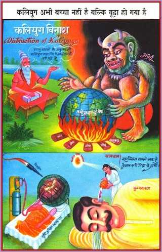
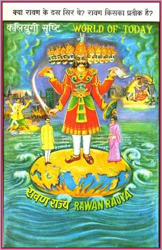
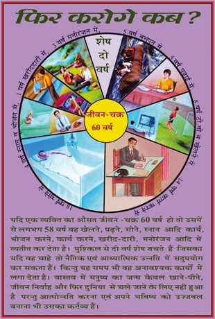
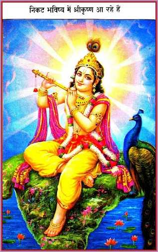

Kaliyuga is not a small child; Kaliyuga has its legs in the grave now
Today, the situation is that though atom and hydrogen bombs have already been stockpiled in a very large number for the destruction of the world, and though the world-population has swollen up to the point of explosion, yet people all over seem to have been lulled to deep slumber of ignorance and sloth, as they have been told and led to believe that Kaliyuga is yet in its early infancy and that it has about 400 thousand years more to live yet!!
God Shiva, the most beloved Father, has descended again into the world for our liberation and has been giving Divine Wisdom since some time past. So, it is time that you shook off sloth for, if you make full efforts now for the elevation of yourself (soul), your noble role, thus attained, would repeat Kalpa after Kalpa and thus, your high success would be sure and secure. If you do not make efforts towards your divinisation right now, you would be a big loser Kalpa after Kalpa. Further, don’t be misled by the false view that Kaliyuga is yet a small child; rather, keep yourself awake with the thought that Kaliyuga has its legs in the grave now. Taking this realistic view, make earnest, sincere and sustained endeavours to purify yourself and to establish yourself in constant Yoga.
Ravana
People have heard and, strangely enough, believe that, in Golden Age, there lived two demons, Hiranyakashyapa, and Hiranyaksya and that in Silver Age, there was a demon, named Ravana, who kidnaped Rama’s queen Sita. These are not history; these simply reveal certain spiritual truths, as there cannot have existed Hiranyakashyapa and Hiranyaksha in Golden Age or Ravana in Silver Age. How can demons ever be existent in the dominions of Shri Lakshmi and Shri Narayana, i.e. of deities? Demons dare not and cannot have sight of deities. How could degraded beings, called demons, effect entry in the virtuous world i.e. heaven or in the world of Satyuga? Heaven is not for the Demon and his ilk.
Think for a while if there can at all be a man with ten heads. The ten heads of Ravana symbolise the five vices in men and as many in women. In short, Ravana is a representation of Maya, i.e. of the vices, prevalent in the society. The word, ‘Ravana’ means: ‘that who makes one weep.’ Vice it is that makes one sorrowful and weep.
Ravana, i.e. Maya which symbolises the vices, has grown in power over the world. In Iron Age, Tamoguna, the basest form in man—is pre-dominant. All persons are ranked as Shudras. In this epoch, so to say, in this the lowest position, they are born 42 times either as praying, worshipping or supplicating rulers or as among the masses. The sun, trees, fire and other elements also begin to be worshipped. Having thus fallen from the state of communion with God, the Supreme Soul. India, which was once unparalleled in complete peace and happiness, as Paradise always is, now becomes needy, low and insolvent and what you may call ‘hell’.
Aim of The Rajyoga

The aim of all this teaching is to enable one to rid one’s self of any attachment to the body and objects of all bodily senses, and also to all worldly relationships, and thereby, to stabilise one-self in the remembrance of the soul and the Father of all souls, i.e., the Supreme Soul.
Stability in the Soul-consciousness and God-consciousness will bring peace and bliss to the soul. By this means, all the latencies, i.e., Samskaras of vicious actions of the past lives will be destroyed because intellectual communion with God is like fire. Yoga washes off all dirt from the soul; bathing in the Ganges or other rivers can remove the dirt of the body only. Without Yoga, the soul that is fallen cannot be purified.
Yoga is the only true ‘Satsang’ because, by it alone, the soul gets into link or association with God, who is the truth. By dint of Yoga, man controls his otherwise fickle senseorgans and overcomes the diverse, vile thoughts and thus defeats Maya. Yoga has such great force that, under its influence, even the elements of Nature are brought to Satoguna and the right path, and peace is established in the world.
Hence, you should grasp the essence of this Godly Knowledge and become a Yogi, because by means of yoga, the soul gets immense joy of an extraordinary kind from its union with the Supreme Soul.
God is the most Beautiful Being. We remember Him also who is Beautiful. Beauty is a thing that bewitches man and draws his mind and understanding again to itself. But beauty of body and other things is subject to gradual decline and death last of all. Disease, grief, death, and gratification of senses kill beauty and, therefore, he who clings to it, comes at last to grief. On the contrary, it is the Supreme Soul, our Supreme Father, who is absolutely and truly beautiful. His beauty is spotless; it never suffers change or decline. He is universally admitted to be true, good and beautiful. He is the great charmer. Rich devotees would give all they have to have a glimpse of Him even if it be for a moment only. What a wonder! By acting up to what He says, a woman shines as brightly as Shri Lakshmi and man becomes as resplendent as Shri Narayana, i.e. as Shri Krishna, the lord of Heaven.
Shri Krishna is coming
The Gita is the only scripture of our religion and that the Knowledge stated therein was imparted by Shiva, the Supreme Soul. His are the great sayings, among which “Remember Me” is one. Shiva descends in Sangamyuga on the person of Prajapita Brahma and it is He alone who can make us fit for the status of a deity, like Shri Krishna. Bharat becomes the paradise in which Shri Krishna walks on the earth. Having learnt all this, at the present time, which is called existing Sangamyuga, we should receive and act up to the Knowledge that God, the Supreme Soul, gives us through Prajapita Brahma. This Knowledge, given in The Gita, is given to us to make us deities like Shri Narayana. Having received the Knowledge, we have to acquire all good qualities and excellence to a high degree, and be absolutely viceless, and be examples or the best among all, to be called Maryada Purushottama. While explaining to you the significance of the Vaijayanti Mala I told you that the 108 beads that make this rosary are a memorial to those who won complete victory over Maya, i.e. the vices. Knowing all this, we have ourselves to be living examples of how we earn a place in the rosary of excellent souls. That, in short, means that we, by our own efforts, have to conquer Maya and thus become the victorious children of Shiva.